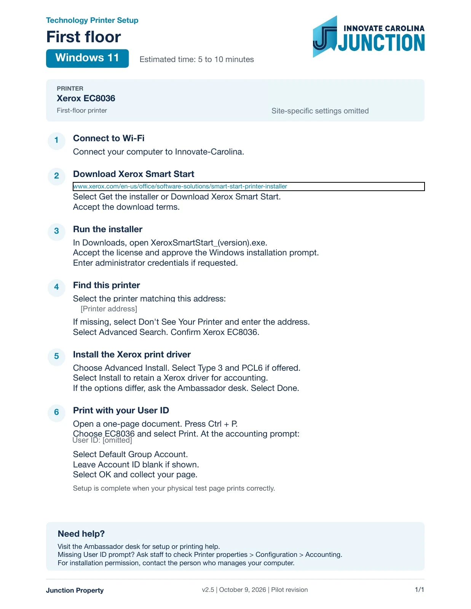
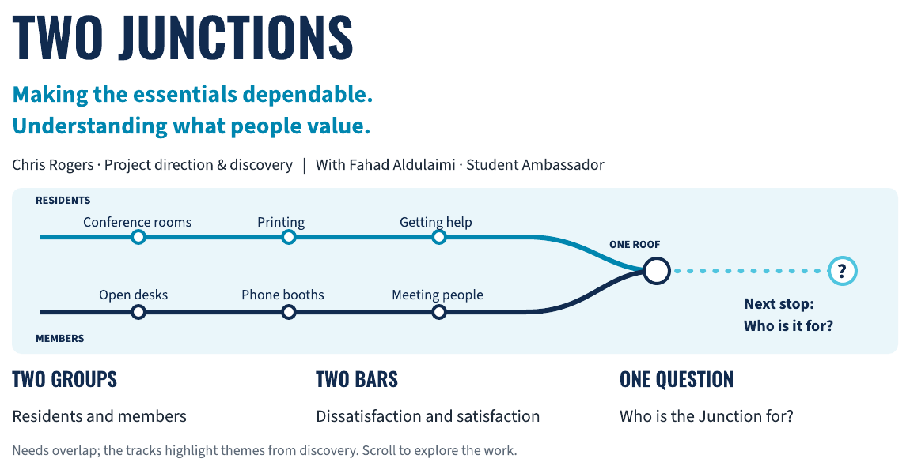
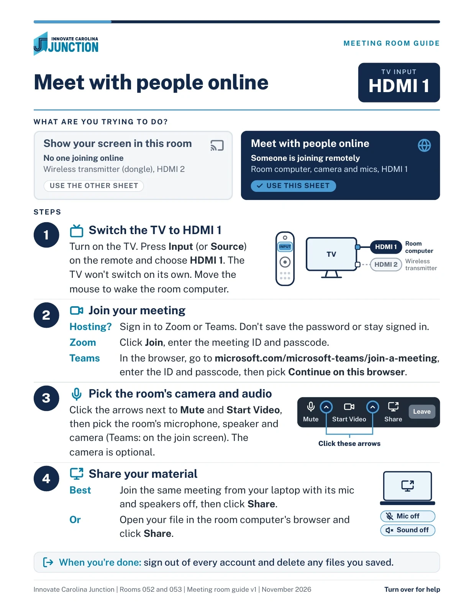
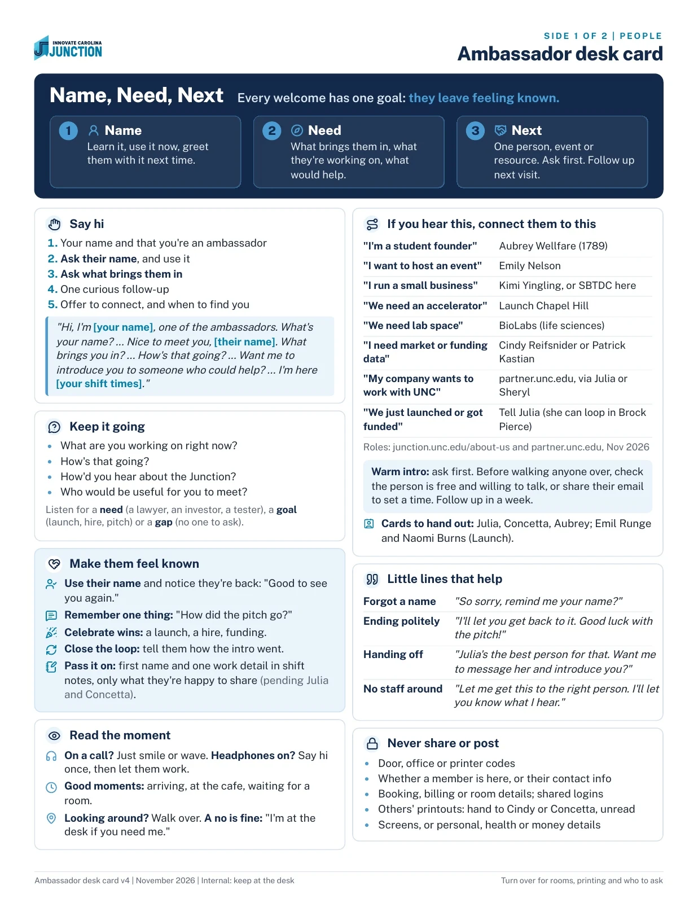

Delivered
Printing support
Fahad created setup instructions and helped more than 20 people with printing. My discovery approach and synthesis informed the work.
View printing example (PDF)Learning & Work · Fall 2026
Developed in Fall 2026, Two Junctions explores how to improve everyday work in a shared space serving individual members and UNC Innovate Carolina resident teams. I defined the objectives and approach, led discovery, synthesized themes, and developed recommendations. Working with Student Ambassador Fahad Aldulaimi, the project connected those findings to printing support, task-based meeting-room guides, and ambassador support materials. Fahad created the guides and training materials, supported users, and analyzed room use. Printing improvements have been delivered; room validation and training delivery remain ahead.

Status as of November 25, 2026

Delivered
Fahad created setup instructions and helped more than 20 people with printing. My discovery approach and synthesis informed the work.
View printing example (PDF)
Pilot approved
Two rooms share a setup and two guides. Fahad created the share-to-display instructions. A November 30 pilot is planned to test unassisted startup and the meeting experience.
View meeting example (PDF)
Materials prepared
Fahad developed Student Ambassador training and support materials around Name, Need, Next. I defined objectives and recommendations. Training is still to run.
View ambassador example (PDF)This project taught me to question the assumption that everyone sharing a workspace needs the same experience. Discovery revealed different needs among members and resident teams and helped me turn those differences into practical priorities. Working with Fahad strengthened the connection between my product direction and everyday implementation. I also began connecting dependable services with a larger question: whom should the Junction serve, and what would make it worth choosing?